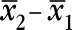
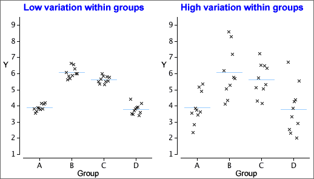
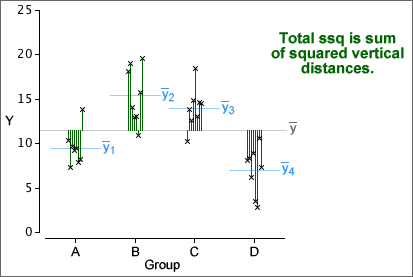
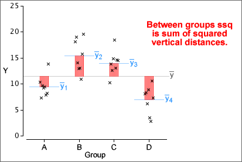
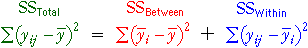

If you don't want to print now,
Data
In this section, we examine data that may arise as:
We will model the data in terms of g groups. The data often arise from completely randomised experiments with g treatments.
Model
The model that was used for 2 groups can be easily extended to to g > 2 groups, allowing different means and standard deviations in all groups.
| Group i: | Y ~ normal (µi , σi) |
However to develop a test for equal group means with g > 2 groups, we must make an extra assumption that the standard deviations in all groups are the same.
| Group i: | Y ~ normal (µi , σ) |

If there are g groups, this model has g + 1 unknown parameters — the g group means and the common standard deviation, σ. It is flexible enough to be useful for many data sets.
If the assumptions of a normal distribution and constant variance do not hold, a nonlinear transformation of the response may result in data for which the model is appropriate.
Estimating the group means
We now assume a normal model with the same standard deviation in each group,
| Group i: | Y ~ normal (µi , σ) |
The sample means provide estimates of the {µi}:

Estimating σ2
The sample standard deviation in any single group, si, is a valid estimate of σ, but we need to combine these g separate estimates in some way.
It is easier to describe estimation of σ2 rather than σ. If the sample sizes are the same in all groups, a pooled estimate of σ2 is the average of the group variances,

If the sample sizes are not equal in all groups, this is generalised by adding the numerators and denominators of the formulae for the g separate group variances,

More mathematically, yij denotes the j 'th of the ni values in group i , for i = 1 to g . The pooled estimate of σ2 can then be written as

The pooled variance is influenced most by the sample variances in the groups with biggest sample sizes.
Revisiting the difference between two group means
In an earlier section, we described confidence intervals and tests about the difference between two group means, µ2 - µ1. They can be improved if we can assume that
σ1 = σ2 = σ
Inference is still based on , but the equation for its standard deviation can be simplified

Confidence interval
A 95% confidence interval for µ2 - µ1 has the same general form as before,

but the standard deviation and the degrees of freedom for the t-value, ν, are different.
| degrees of freedom | ||
| Allowing σ1 ≠ σ2 | min( n1 - 1, n2 - 1) | |
| Assuming σ1 = σ2 = σ | n1 + n2 - 2 |
If it can be assumed that σ1 = σ2, the confidence interval is usually narrower.
Example
The diagram below shows 95% confidence intervals obtained by the two methods.

Note that the CI obtained with the assumption of equal variances is slightly narrower.
Recommendation
It is usually best to avoid assuming equal standard deviations when comparing two groups.
Hypothesis tests
Similarly, if we can assume that σ1 = σ2, the test for equal group means can be improved.
H0 : μ2 − μ1 = 0
HA : μ2 − μ1 ≠ 0
We can use the test statistic

The p-value for this test is found from the tail area of the t distribution with (n1 + n2 - 2) degrees of freedom.
Comparing several groups
A new approach is needed to compare the means of three or more groups — the methods for two groups cannot be extended. We again assume a normal model with equal standard deviations,
| Group i: | Y ~ normal (µi , σ) |
Testing whether there are differences between the groups involves the hypotheses,
H0 : µi = µj for
all i and j
HA: µi ≠ µj for
at least some i, j
Variation between and within groups
Testing whether the model means, {µi}, are equal is done by assessing the variation between the group means in the data. However, because of randomness in sample data, the means are unlikely be the same, even if H0 is true.
In the example on the left below, the group means vary so much that the {µi} are almost certainly not equal. However the group means on the right are relatively similar and their differences may simply be randomness.

To assess whether the means are 'unusually different', we must also take account of the variation within the groups. The data set on the left below gives much stronger evidence of group differences than that on the right, even though the group means are the same in both data sets.

The evidence against H0 depends on the relative size of the variation within groups and between groups.
Notation
In the formulae in this page, the values in the i'th group are denoted
by yi 1, yi 2,
... . More generally, the j'th
value in the i'th group is called yij and
the
mean of the values in the i'th group is  .
.
Total variation
| The total sum of squares reflects the total variability of the response. |
The overall variance of all values (ignoring groups) is the total sum of squares divided by (n - 1).

Variation between groups (signal)
| The sum of squares between groups measures the variability of the group means. |
Variation between groups is summarised by the differences between the group means and the overall mean. Note that the summation is over all observations in the data set.

Variation within groups (noise)
| The sum of squares within groups quantifies the spread of values within each group. |
This is also called the residual sum of squares since it describes variability that is unexplained by differences between the groups. Note that the pooled estimate of the common variance, σ2, is the sum of squares within groups divided by (n - g).

Relationship between sums of squares
The following relationship requires some algebra to prove but is important.

Sums of squares
| Sum of squares | Interpretation |
|---|---|
| Overall variability of Y, taking no account of the groups. | |
| Variability that cannot be explained by the model. | |
| Variability that is explained by the model. |
Coefficient of determination
The proportion of the total sum of squares that is explained by the model is called the coefficient of determination,

Example

Hypothesis test
The following hypotheses are used to test whether the group means are all equal:
H0 : µi = µj for
all i and j
HA: µi ≠ µj for
at least some i, j
We will describe some of the steps for this test, but cannot justify them here.
Mean sums of squares
The three sums of squares are first divided by values called their degrees of freedom:
| The mean total sum of squares is the sample variance of the response (ignoring groups). | |
| The mean within-group sum of squares is the pooled estimate of the variance within groups. | |
| The mean between-group sum of squares is harder to directly interpret. |
The numerators in these ratios add up:
SSTotal = SSBetween + SSWithin
and the same relationship holds for their denominators (degrees of freedom):
dfTotal = dfBetween + dfWithin
F ratio and p-value
The test statistic is an F-ratio,

This test statistic compares between- and within-group variation. The further
apart the group means, the larger SSBetween and the larger the F-ratio.
Large values of F suggest that H0 does not hold — that the group means are not the same.
The p-value for the test is the probability of such a high F ratio if H0 is true (all group means are the same). It is based on a standard distribution called an F distribution and is interpreted in the same way as other p-values.
The closer the p-value to zero, the stronger the evidence that H0 does not hold.
Analysis of variance table
An analysis of variance table (anova table) describes some of the calculations above: